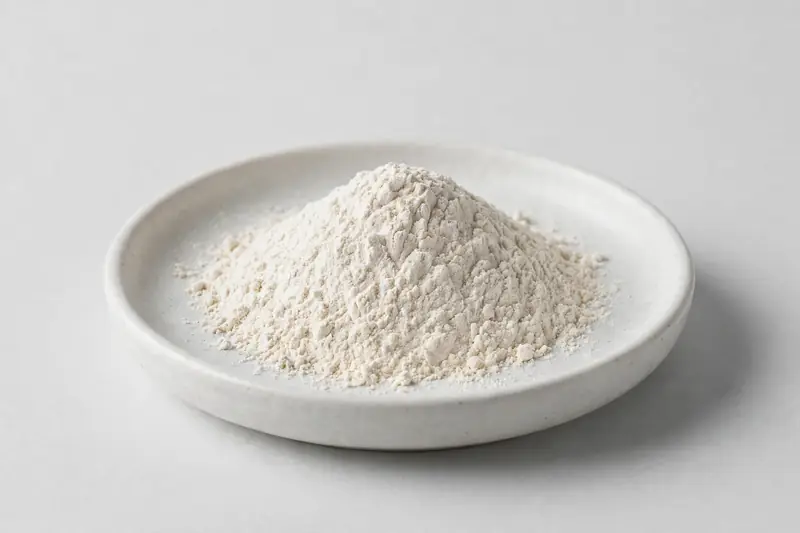

Kudzu root — puerarin and isoflavone botanical for traditional tonic formulations.

Overview
Kudzu extract is derived from Pueraria lobata root and is typically specified around puerarin or total-isoflavone content. It is used in traditional tonic and botanical blend development across several markets. Based in Xi'an, we are a trading company sourcing through partner producers, with feasibility confirmed after the buyer's target specification is received.
Specifications below reflect commonly requested options in the market — not a stock list. Share your target spec and we'll confirm exactly what we can supply, honestly.
| Specification | Details |
|---|---|
| Botanical identity | Kudzu root extract powder |
| Marker compound | Commonly requested spec grades: puerarin and total isoflavones; actual specs confirmed on inquiry |
| Appearance | White to off-white fine powder |
| Analytical methods | Methods referenced in buyer specifications: HPLC |
| Mesh size | Typically 80–100 mesh (confirm per inquiry) |
| Testing | COA/TDS arranged on request; scope agreed per your spec |
Applications
Documentation
We don't claim in-house labs or certifications we don't hold. COA and TDS documents can be arranged on request, and testing scope is agreed against your specification before supply.
FAQ
Related products
Pueraria lobata
Key marker: Puerarin 40-98%
View specs →L-Citrulline
Key marker: 99%+
View specs →Bromelain (Ananas comosus)
Key marker: 2000-3000 GDU/g
View specs →Papain (Carica papaya)
Key marker: USP activity units
View specs →Plukenetia volubilis
Key marker: Omega-3 ALA
View specs →Rosa canina
Key marker: Linoleic Acid
View specs →Send your target spec and volumes — we'll respond with a tailored quotation.
Request a Quote